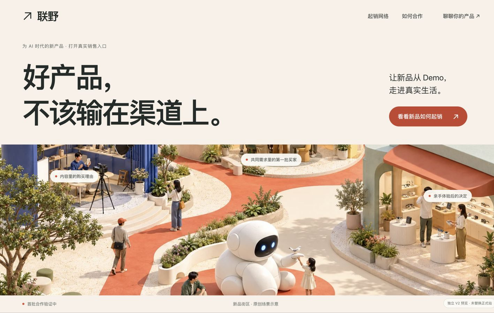
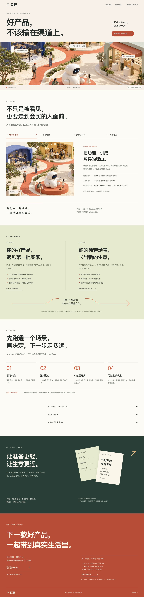
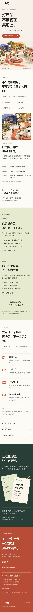
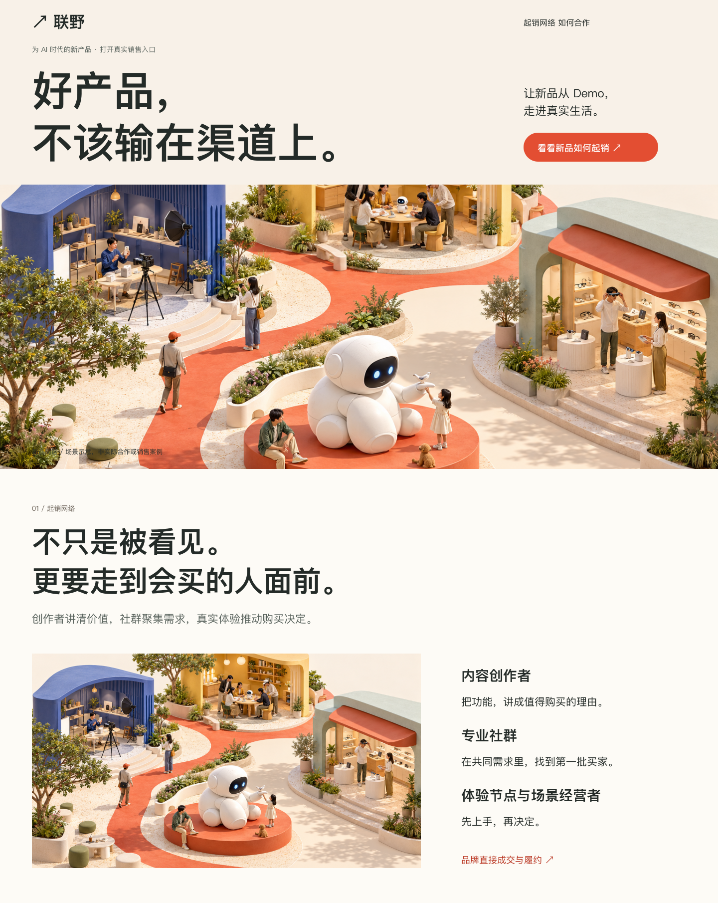
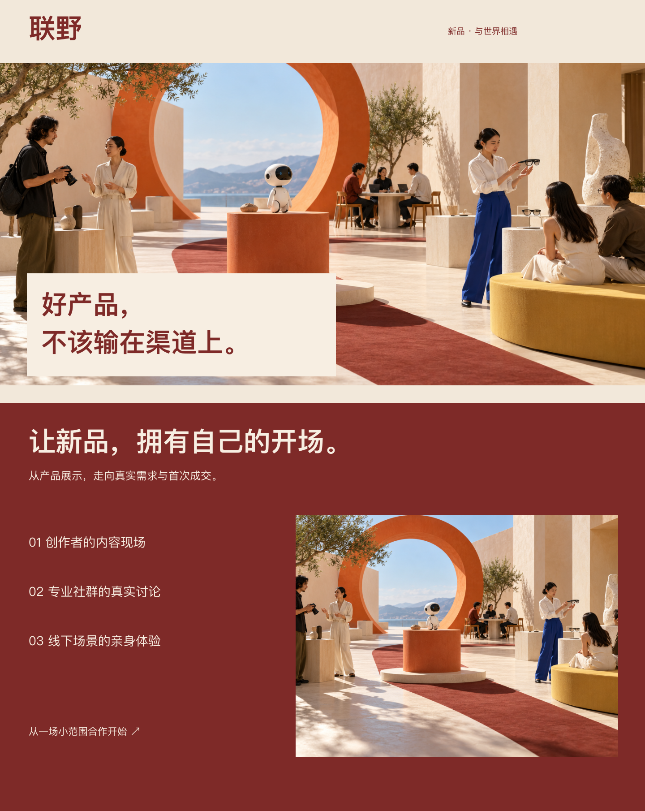

2026.10.18 / 独立预览交付
采用“新品街区”原创方向。用真实场景讲清创作者、社群、场景经营者与体验节点如何成为新品的销售入口，再展开品牌与伙伴价值、首次合作和 AI 辅助边界。
本机预览 · 现有正式官网未改动 · 未推送或部署

均为实际浏览器渲染，1440×900 / 390×844。点击查看原始全站长图。



朱红路径连接具体的内容、社群与体验空间，较直接表达新品进入生活和销售。

日光展场与产品相遇，更偏策展气质；业务动作的可读性较弱，未混用。
已完成多宽度布局、四种场景切换、手机导航、键盘操作、FAQ、邮件分流、复制反馈、减少动态和无脚本回退检查。修复了小字背景对比度、回到顶部略过导航及手机长标题断行。
首批合作验证阶段。真实客户付费、签约与销售能力、AI成本增量、经验复用和网络效应尚未验证；网站与场景演示不构成这些能力的证明。未进行真实移动网络性能评级、全量无障碍认证或第三方审美验收。